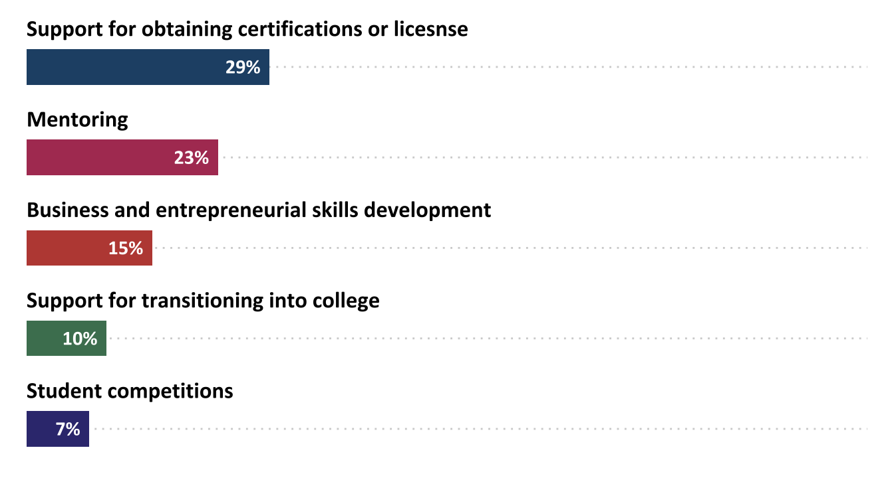
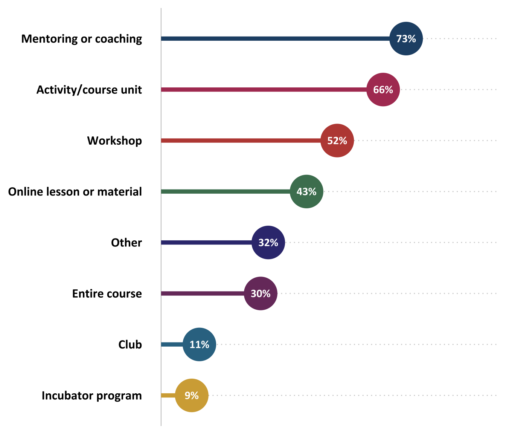
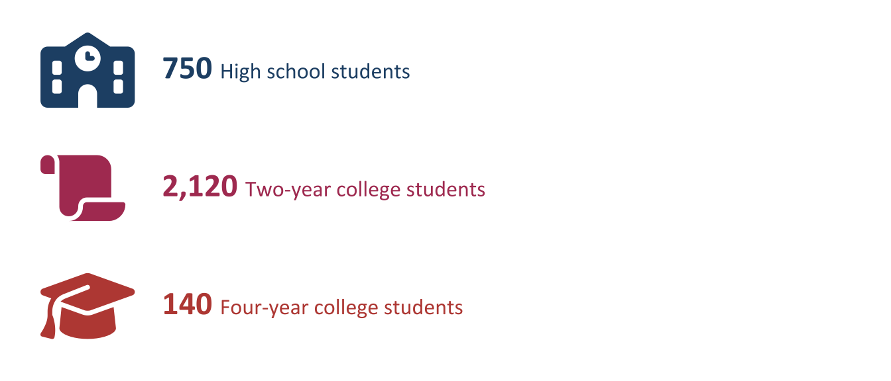
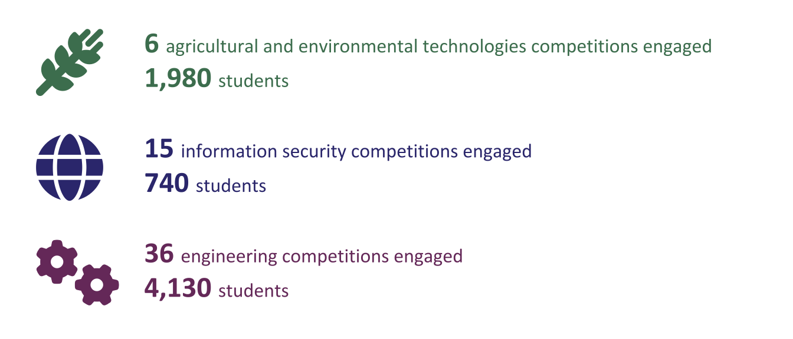
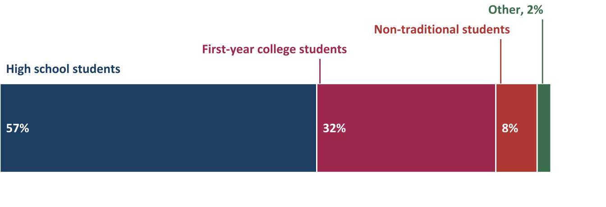
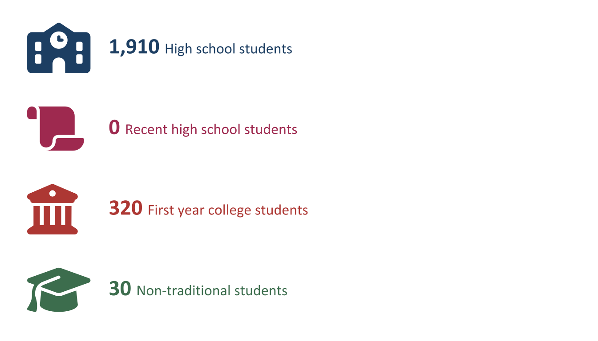

Chapter 4 Student Service and Support
4.0.0.0.1 The ATE program supports an array of activities designed to enhance student learning and success in STEM programs outside of typical classroom environments. Studies have shown that students who experience these types of enrichment and support programs are more likely to have positive attitudes toward science and sustain interest in STEM (Merolla & Serpe, 2014).
4.0.0.0.2 ATE PIs were asked if their projects provided any of the following student-focused services: support for students transitioning into college, opportunities to participate in STEM competitions, mentoring, entrepreneurial skills development, or support for obtaining industry-recognized certifications or licenses. Respondents who answered affirmatively were asked additional questions about the nature of these activities and the number of students served.
4.0.0.0.3 ATE PIs were asked if their projects provided any of the following student-focused services: support for students transitioning into college, opportunities to participate in STEM competitions, mentoring, entrepreneurial skills development, or support for obtaining industry-recognized certifications or licenses. Respondents who answered affirmatively were asked additional questions about the nature of these activities and the number of students served.
4.0.0.1 Fifty percent of projects provided at least one type of student service or support.
4.0.0.1.1 147 ATE projects provided at least one type of student service or support.

Figure 4.1: Percentage of projects that provided student services and support (n=294)
4.1 Business and Entrepreneurial Skills
4.1.0.1 Fifteen percent of ATE projects engaged students in building their business and entrepreneurial skills.
Business and entrepreneurial skills development involves working with students to develop their skills in areas such as business development, marketing, networking, and understanding the global marketplace.
A total of 2,690 received business and entrepreneurial skills development from 44 ATE projects in 2024.
4.1.0.1.1 Mentoring and coaching, and in-course units or activities are the dominant ways of helping students develop business and entrepreneurial skills in the ATE program.

Figure 4.2: Percentage of skills development opportunities offered to students by ATE projects (n=44)
4.2 Mentoring
4.2.0.1 Twenty-three percent of ATE projects provided students with mentoring or coaching
Student mentoring involves an experienced industry professional, educator, or advanced student providing guidance and advice to help less-experienced students develop the skills and knowledge they need to enhance their academic and professional growth. Mentoring is a source of both psychosocial support and career advancement (Anderson et al., 2015). This type of support is especially important for students at two-year colleges, who typically face more barriers to degree completion than those at four-year institutions (Crisp, 2010).
4.2.0.1.1 Approximately 3,060 students received mentoring through ATE projects.

Mentoring was most often provided by educational faculty or staff (79%), followed by business and industry professionals (57%) and students or peers (54%). Four percent of projects that offered mentoring or coaching provided training to the mentors.
4.3 Competitions
4.3.0.1 Eight percent hosted or organized a student competition.
In student competitions, students compete as individuals or teams using skills related to a STEM discipline or industry, such as robotics, information technology, or engineering. Research shows that participation in STEM competitions has a positive impact on students’ interest in pursuing STEM careers, even when controlling for prior interest and ability (Miller et al., 2018).
4.3.0.1.1 7,220 students participated in one of the 69 ATE-hosted student competitions. The most common areas for competitions included:

In addition, 7 other competitions engaged 250 students in advanced manufacturing, and 4 competitions in general advance technological education engaged 110.
4.4 Transition Programs
4.4.0.1 Ten percent of ATE projects provided extra support for students transitioning into college
Community colleges enroll disproportionate numbers of students who are economically disadvantaged and from underrepresented minority groups (Edgecombe, 2019). Programs that support students as they transition into college are an important means for enhancing academic persistence and completion among these and other students (Baber, 2018). The ATE program supports efforts to facilitate students’ transition into college and equip them with the skills they need to successfully navigate college. Such programs include—but are not limited to—summer bridge programs, college readiness workshops or classes, first-year programs, and support for nontraditional students.
The majority of transition programs are for High school students.

Figure 4.3: Primary audience for transition programs supported by ATE projects (n=40)
4.4.0.1.1 Around 2,280 students transitioning into college received support from ATE projects.

4.5 Support for Certifications or Licensure
4.5.0.1 Twenty-nine percent helped students prepare for certification or licensure.
Professional certifications, typically awarded by industry groups or professional organizations, serve as verification that an individual has the knowledge and skills required for certain jobs. Many community colleges offer students assistance in obtaining these credentials. These efforts may involve aligning academic programming with certification exams, offering exam preparation support, or operating testing centers on campus (National Academies of Sciences, Engineering, and Medicine (NAS), 2017).
Eighty-five ATE projects provided students with support for obtaining certifications or licenses in 2024. 92% of those ATE projects reported supporting students through aligning existing courses with licensing or certification requirements. ATE projects also provided test preparation workshops or learning modules (69%) and served as testing centers (47%). ATE projects involved in this activity were asked to identify the type of entity that awards the licenses or certifications they help students obtain. The most common response was non-governmental organizations (46), followed by for-profit companies (28) and government agencies (14).